武汉物资紧缺，民间力量把援助送进医院到底有多难？
原文链接 备份链接 2月1日，一家专业从事医药分销配送的企业，开始协助武汉红十字会处理仓库中堆积的援助物资。无序的状况有了很大改观。 1月23日武汉“封城”以来，医院防护物资告急，各种民间力量应声而动。 华中科大和武汉大学的美国北加 …
以下文章来源于地球青年图鉴 ，作者地青


在湖北疫区物资援助中，一群饭圈女孩动作迅速地为医护人员筹集了不少物资，她们的效率与组织能力令人惊叹。
我们采访了三位参与湖北疫区物资支援的饭圈女孩，从这些95后、00后粉丝身上了解到，追星不仅是看演出、打榜，它也引导着一群人脚踏实地地践行公益。
以下为受访者自述。
三点睡六点起蹲货源
文宝 蔡徐坤山东粉丝站站长
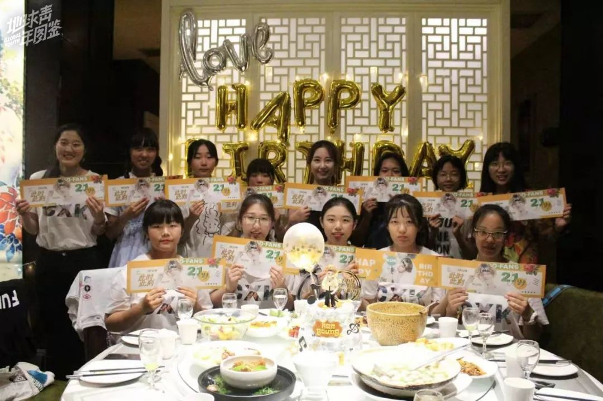
△ 蔡徐坤山东粉丝站聚会
我现在山东泰安读高中，空闲时间运营蔡徐坤山东粉丝站。作为站长，山东站里的工作都需要我全盘负责和组织。我们山东站目前一共28名成员，分设了管理组、文案组、数据组、前线组和美工组。
除夕那天晚上12点多，武汉医院资源短缺的消息上了热搜，几家医院发出联合声明医用物资短缺，而且还出现了医患纠纷的消息。看到医护人员在前线这么辛苦却得不到应有的防护，我当时就心急了，在网上疯狂搜索相关信息，一直到半夜两点多。这次是我最心急的一次活动，那天晚上我就想把所有人叫醒，起来一起找物资。
我当即决定要做一次紧急应援。之前和其他蔡徐坤粉丝站一起做武汉疫区的联合应援时，我们只捐了款，没有采购物资。但这次情况不同，前线情况紧急，经手中间人我们无法保证物资第一时间运到医护人员手上，于是，这次我决定要用联合捐款剩余的费用采买，直接寄送到医院去。
当晚，文案组的姐妹连夜写好需求物资的文案，发到工作群里，征求大家意见后，才敢去睡觉，当时已经快凌晨三点了。大年初一一早，我六点多就起床组织大家找物资。当时物资太难找了，网上的店大多已经被抢空，我们只能一家一家地去问，看哪里还有“漏网之鱼”。
原本有货的店就极少，同时又要注意必须是严格符合医用标准的，我发动了组里的姐妹在各大电商平台搜索。搜到有货的店，就去私信客服能否发绿色通道，直接送到武汉的医院，哪怕要加钱也可以。

△ 线下购买的手套
毕竟网上能搜到的有限，我又发动组里的姐妹去家附近的药店一家家问。医用手套药店限购，每个人只能买一包。我们只能跟药店商量，说物资是发给武汉前线的，磨了好一会，最后才同意把三包手套卖给我们。买到手套、口罩后，我们赶紧打包，到傍晚才确定所有网上购买的物资可以发出，寄出了护目镜30个，一次性医用帽子2000顶，一次性鞋套1000只，84消毒液50瓶，一次性医用手套300只。目前只有部分物资寄到，还有一些已经发货。
到现在，我们还在找口罩的生产商，想继续采购物资，找了一系列的生产商，电话没有一个接的。一些捐赠机构出现问题后，我意识到以后不要直接给机构捐钱，要做还是得自己落实捐赠物资。
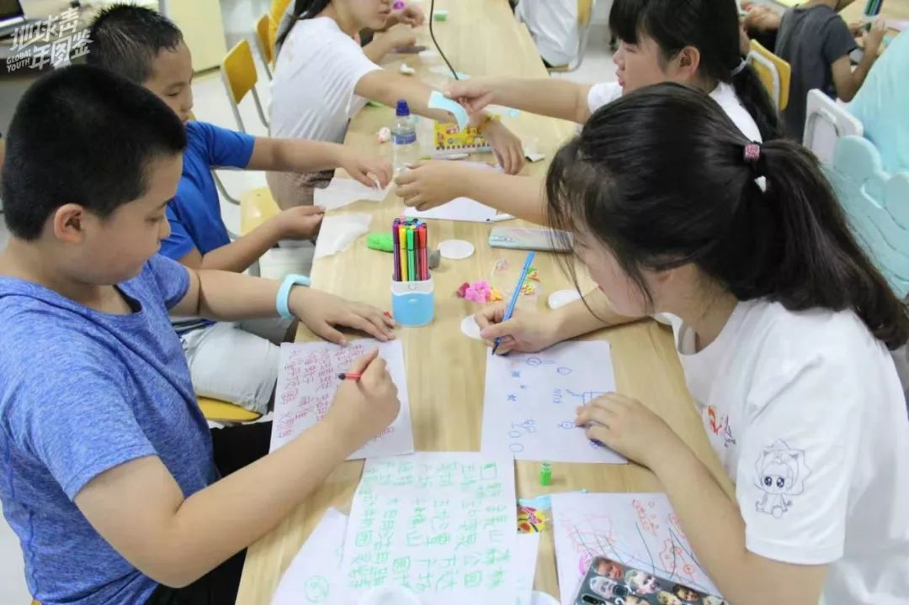
△ 粉丝团看望自闭症孩子
除了两次向武汉发出公益援助外，我们之前还组织了多次公益活动，也有紧急物资援助的经验。平时的公益活动，部分会和偶像自己的公益活动有关。蔡徐坤一直关注儿童方面的公益项目，我们就组织过关爱自闭症儿童的活动。他之前担任中国扶贫基金会减灾形象大使，山东章丘和寿光洪灾时，我们发起了物资捐赠。
我觉得这次的支援比以往的来说，真的太有意义了，在全社会都在关注这件事情的同时，我也能献出一份自己的力量。

△ 粉丝团给自闭症孩子买的礼物
做粉丝站的初衷，本着一心一意陪蔡徐坤“走花路”的原则，集聚山东的IKUN一起为坤坤做好山东部分的大小应援活动。以前我没有参与过公益活动，因为蔡徐坤做公益，我深受他的影响，也开始经常参与，我们这个粉丝站快做成公益站了。
追星给了我很多正能量，让我个人的生活改变了很多，我从一个没有做过公益的人，到现在会去关注社会上的一些人和事，慢慢地了解，去帮助更多需要帮助的人。
饭圈“决策者”组成的“666联盟”
小度 鹿晗公益联合应援站负责人
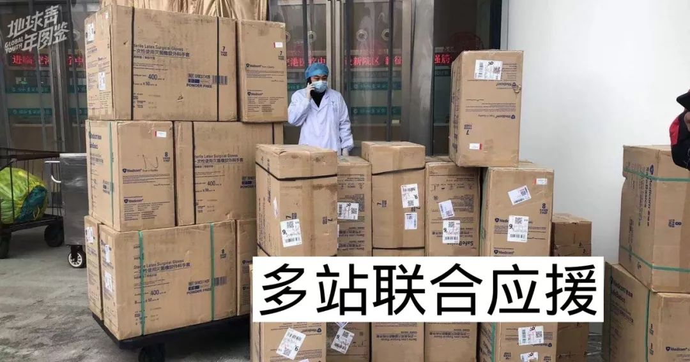
△ “666联盟”捐赠物资至武汉东西湖区人民医院
我今年20岁，是在校大学生，从鹿晗刚出道就开始追他了，从2017年开始，我跟粉丝站做公益，这次疫区应援，我主要负责微博运营以及负责账目记录和对外沟通。
我们开始行动的时候，就是以捐赠物资为目的的，所以没有组织捐款。在网上有了解了一些疫情的最新进展，也在鹿晗超话看到有医护人员的粉丝奔赴一线，就决定要以物资的形式去帮助湖北。

△ “666联盟”中的27家粉丝团体
这次，我们联合了27家粉丝团体组成了“666联盟”，一起来完成物资支援。一开始大家是在私下的讨论货源，慢慢的就凑齐了现在的666成员了，成员可能对外看上去甚至有些破次元壁，但粉丝团之间日常都有联系。大家对于货品的要求比较一致，物资要符合捐赠标准，别的不重要，这是我们一起联合的基准点。
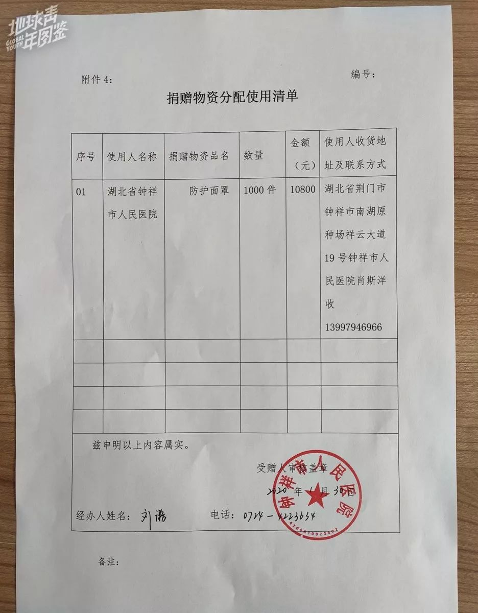
△ “666联盟”向钟祥市人民医院捐赠防护面罩的捐赠物资分配使用单
在团队内大家认领自己擅长的事，比如文案由紫宁Winnie后援会和李荣浩吧两家负责，擅长作图的金钟仁吧负责了联盟的的物资报告图。参与其中的大部分人都是所谓的饭圈“决策者”，遇事不慌，协调起来较为简单。
从开始参与援助疫区到现在，工作非常繁忙，几乎每天只有三到四个小时的睡眠时间。为了确保无时差地和海外货源商家进行沟通，休息的时间还得压缩，手机24小时开机，几乎不离开电脑前，连除夕夜大家都是捧着手机，边吃边盯货源，生怕错过了合适的货源。
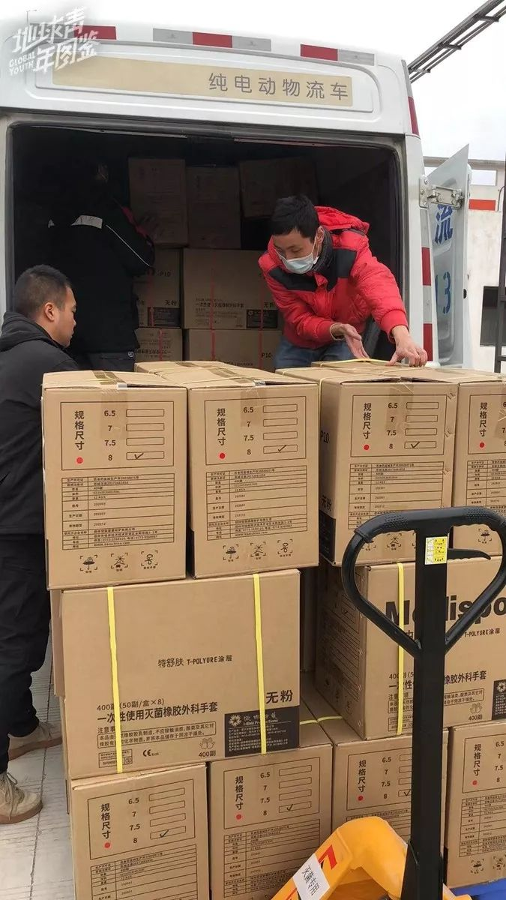
△ “666联盟”捐赠给湖北医院的医用手套
我们对捐赠物品的把控要求非常严格，每一样物品在购买前，都会找到专业人员来替我们把关。在了解购买的物资是否符合医院所需标准时，要保证所有物品一定要确定可用，而不是将就用。
关于物资的运输也是个大问题，刚好是春节假期，相关物流公司不管是价格或者时效都是在翻倍的往上跳，并不是每一样货物都能通过绿色医疗专线进行运输，所以在运输方面，联盟里的各家负责人也下了很多心思。
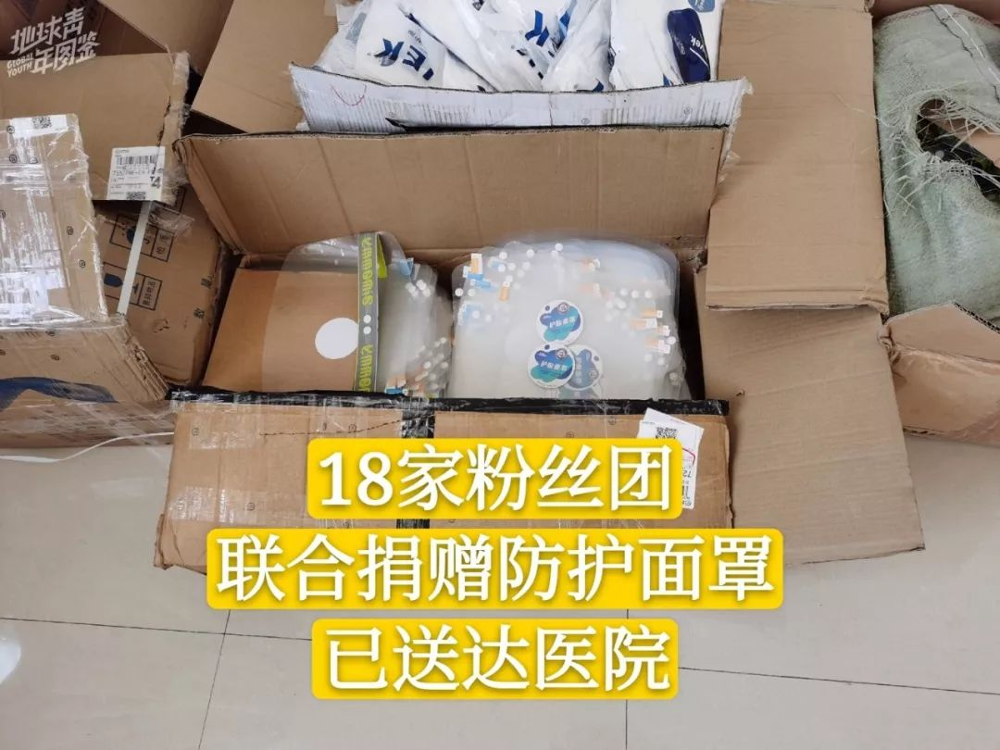
截至2月2日，“666联盟”成员已联合捐赠物资共计42万元，其中包括一次性医用外科灭菌手套共计3万套、1000个防护面和医用鞋套5000双以及医用帽15000只，目前也与为王嘉尔打天下应援博联合捐赠护目镜400个，有些物资还在运输中，暂且不方便透露，之后会对外公示。
大家或许会觉得粉丝们打榜会有竞争，但我们做公益这件事并没有竞赛感。其实外界对饭圈女孩这个团体多多少少存在些误解。我们也是常人，平时做的事无非就是想让自己喜欢的艺人，得到大家的认同而已。可是我们不会把公益和利益挂钩，公益就是公益，不存在竞赛，爱无大小，尽力就好。

△ “666联盟”公告图截图
这段时间持续帮忙支援，当发现身边的粉丝朋友正是冲在一线的战士时，大家的担心和骄傲，让我明白了我们真的是一家人。
印象深刻的是，自从我们开始捐助之后，每天微博都会有好几个粉丝来私信我们需不需要帮助，也有一些粉丝会给我们发缺乏物资的医院的信息，但是由于我们的能力有限，所以没有办法能帮助到所有的。
还有一次郑元畅家元梦畅想粉丝团的团儿跟我说，因为郑元畅扮演江直树的角色太深入人心了，收到不少来自一线工作人员的求助，可能当初大家学医或者做一些事情，也受到过艺人的影响。这次我们支援，也感受到了艺人在社会的正面形象，正能量满满。
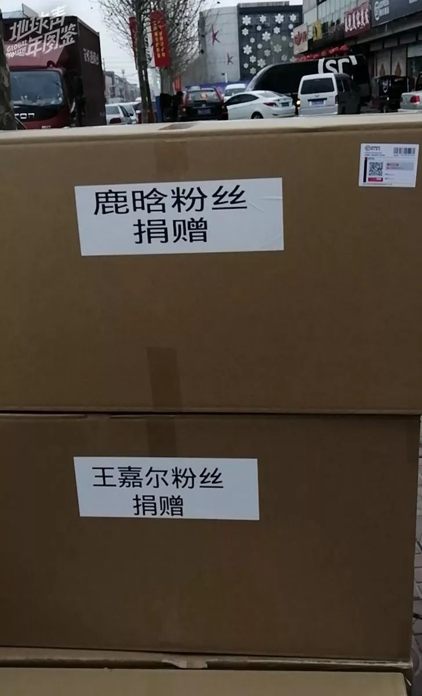
△ 鹿晗粉丝与王嘉尔粉丝联合捐赠护目镜
鹿晗公益联合应援站是2018年3月成立的，是由多个鹿家的站子联合做公益。在加入公益站之前，我参与的都是自家站子里有组织的公益活动。往常我们参与的公益项目可能是针对某一个城市，省份或者某一个团体以及个人，但这一次是我们的国家，与以往最大的不同是感受到了全民一致的心。

△ “666联盟”捐赠的医用手套以及荆州市第二人民医院接受捐赠的证明
其实作为饭圈女孩，常常会听到很多不同评价的声音，我们也没想到这一次会得到这么多的鼓励，但是我们并非想要去对民众展示些什么，只是在自己的能力范围内做自己想做的事，这也是我们公益站的日常。
参与这次支援，我更认定鹿晗会是我一辈子追随的偶像，因为他，我认识了很多志同道合的朋友。我们面对难题时互相鼓励，彼此扶持，这次一系列的行动让我们的关系变得更为紧密了。这让我相信，我们会是一辈子的朋友。鹿晗是远方星球的引力，所以我潮汐不止，是铠甲，所以我一往无前。
省下见面会票钱做公益
Susie 肖战DAYTOY公益站负责人

△肖战公益站部分成员在无锡聚会
我今年22岁，在辽宁的一所大学学新闻，最近在北京的媒体实习。最开始，我和北京的五位粉丝组成了公益站，经过第一次招新，现在共有16名成员，大家遍布各地，有成都、上海、深圳的，还有在日本、新加坡的，其中还有三位还在上学的00后妹妹，其他的姐姐们都已经工作了。
小站成员里有一个美工，两个文案，还有活动组，线上运营组，氪金组，氪金组是几位经济较好的姐姐提供强有力的经济援助。其实大家的分工也没有完全明确，很多活动都会一起参与。
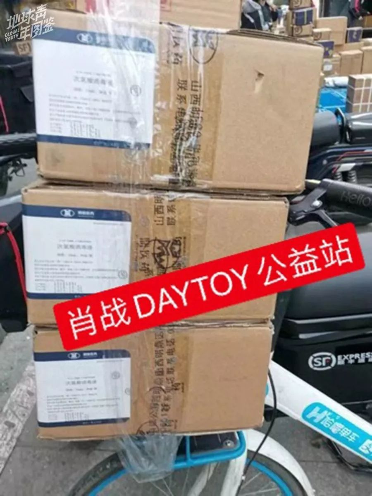
△运送至武汉的消毒液
1月21号晚上，我们当时刷微博，有位大V说疫情挺严重的，大家就讨论要不要为疫区做点事情。每次做决策，我们都需要大家线上一起开会讨论，再进行投票。那天挺晚的，我们就开始商量捐款还是捐物资。
后来国家有拨款，后援会粉丝们也捐款百万，感觉不缺钱。我们也了解了武汉的情况，大家有朋友在当地做医生，多方面了解到最急缺的是物资。
也考虑到捐款后再购买物资，可能需要耗费二次的时间成本和人力成本；直接先尽所能去购买物资可以节省时间，还能更点对点地帮助到他们，所以我们就决定直接去联系物资。
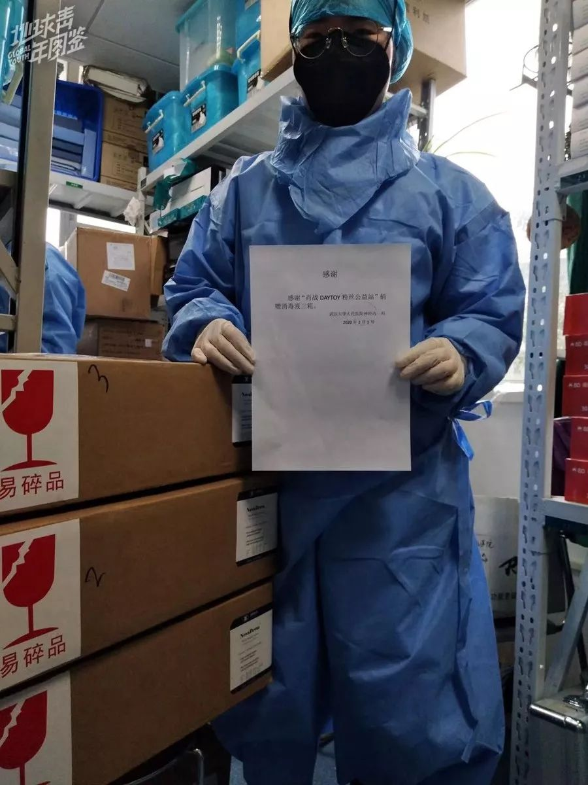
△消毒液送达武汉大学人民医院
找厂家的联系渠道先是通过身边的人，大家各种去打听，站子里也会有粉丝来私信提供一些渠道，但这些渠道很少是可以用到的，一些厂家他们生产的都是民用的，不符合医用。我们联系了湖北医院的对接人，对接人替我们找到定点医院。每当我们拿到一些货的样品时，会先让厂家拍照，再给到医院的对接人，确定合规后才购买。
我们最开始联系到的护目镜和口罩，钱都已经交给厂家了，在等待发货的时候突然来消息，说这批口罩和护目镜是符合医用标准的，得优先给医院，不能给我们发了，最后退款了，只成功发出了108瓶消毒液。

△在北京举行听障儿童的康复活动
站子是2018年7月成立的，最开始的5个人都是在北京线下演出活动认识的朋友，当时才认识两个星期，大家经常聊天。当时有一些演出的票务很难抢票，买黄牛票要6000块。我们觉得花这个钱去看一眼肖战，不会对我们的生活有实质性的改变，也不会对社会有实质性的改变。
为什么不把钱用到更有意义的地方？就萌发了开公益站的想法。可以少看几次现场演出，把钱省下来以肖老师的名义做公益。这样一方面可以帮助别人，另一方面也可以帮助肖老师在公众心中树立比较不错的正能量形象，去把这一份心意送给更多的人。

△慰问成都老兵
小站成立后，我们在北京、上海、深圳、成都都有做过线下活动，由每个城市对应区域的成员负责。我们会去联系当地的一些公益机构，上海的两个姐姐会定期去低智儿童康复中心会去做活动，北京也做过听障儿童的康复活动等等。我们对于一些公益活动的敏感度其实挺高的，可能也是因为饭圈女孩有一个比较敏锐的嗅觉吧。
去年国庆假期的时候，正好赶上肖战过生日，他在无锡拍戏。我们四位成员从北京、上海、日本专程来无锡，做了一次关爱自闭症儿童的生日应援，也是我们在各地的成员难得一次聚在一起做公益。
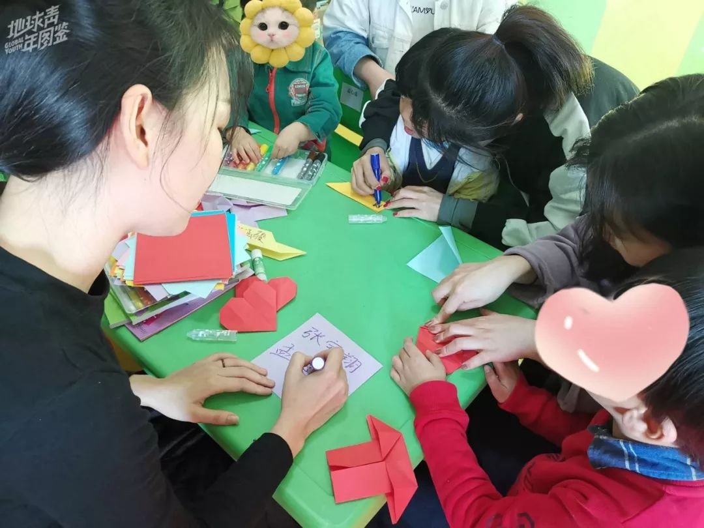
△在上海参与关爱弱势儿童活动
这次湖北的物资支援跟以往的公益活动相比，难度真的超级大。以前其实都还蛮顺利的，没有遇到过物资联系不到的问题。作为全国性的一个公众事件，我们这边力量确实也蛮微小的，能做的事情挺少，有一种很强烈的力不从心的感觉。现在我们还在寻找物资的渠道，但很遗憾的是，合规的还蛮少，越来越困难了，大批量的物资已经不让私人销售了，而是直接发给医院，厂家目前不接受私人订单。
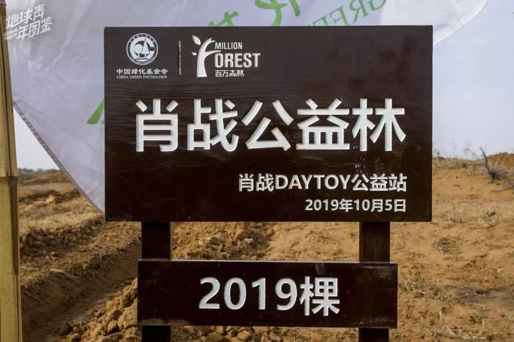
△参加中华绿化基金会“百万森林”计划，捐赠2019棵树苗
最开始家里人觉得追星是一个很疯狂、不理智的行为，对追星的成见也蛮大的。我做了公益站之后，他们还是挺支持的，毕竟是做好事。我想做一些公益的事情也会打破一些他们对追星的成见，家人现在还会关注我们站子的活动。
做公益对我个人的心理上有很多改变，它增加了我生活的幸福感。我自己一个人来北京，家人朋友也都不在这边，有时候生活压力会很大，但是做完公益之后，就觉得没有那么丧了，首先是生活充实了起来，其次是帮助了别人之后，会从中体会到自己是很幸运的人。
可能也是因为人长大了，思想上也成熟了，我现在觉得追星不应该仅限于你看着屏幕，觉得好帅，发出赞美。也不一定去看现场，更不是去做一些私生行为（极端侵犯偶像私生活的行为），干扰明星的正常生活。而应该去更理智的，用一种更好的方式去追星，这是我们做公益的原因，也是我对追星一些想法的转变。我觉得做肖战公益站，就是把对一个人的喜欢，去传递给更多人，把这份爱传递给更多有需要帮助的人。
*图片均由文宝、小度、Susie提供*
*作者 | 曹颖 匡若彤 易琬玉*
*编辑 | 图拉*
凤凰新闻客户端 凤凰网在人间工作室出品


新型肺炎疫情牵动人心，
《在人间》现面向全国网友征稿：
(一) 疫区影像日记
如果你身处疫区
请你用照片（视频）和文字记录
你所听闻和见到的一切
照片不少于3张
文字不少于300字
投稿方式：微信联系人间君（zairenjianliving）
（二）抗击疫情真实故事
无论你是一线医护人员、志愿者、
确诊或疑似患者及家属、已治愈出院人士等等，
如果希望讲述疫情相关经历，
请微信联系人间君（zairenjianliving）

原文链接 备份链接 2月1日，一家专业从事医药分销配送的企业，开始协助武汉红十字会处理仓库中堆积的援助物资。无序的状况有了很大改观。 1月23日武汉“封城”以来，医院防护物资告急，各种民间力量应声而动。 华中科大和武汉大学的美国北加 …
原文链接 备份链接 封城后的湖北荆州：医用级防护物资存量告急 2020-02-03 19:36 作者：邹黄晶 张玉 来源：中国经营网 特约撰稿 邹黄晶 本报记者 张玉 荆州、上海报道 “我们已经想尽了一切办法，目前最缺的还是医用级口罩、防 …
原文链接 备份链接 目前，几个粉丝站的物资除了少量还在路上，大部分已经送到需要的人手里，然而尽管如此，全国各地的物资缺口仍然很大。 文 | 王超 高逸佳 薛雨霏 编辑 | 沈小山 “这些天大家也真的很拼了，晚上核对整理信息有时三四点才睡， …
原文链接 备份链接 《人物》记者向多位寻求捐赠的医护人员咨询，他们均表示，很多医院的医用外科口罩库存量大概在一个星期左右，「平常有时口罩也戴一天，如果不去视察病房，有的科室没有戴口罩的需求。」用得不多、存量少，脆弱的库存和供应系统很快被疫 …
原文链接 备份链接 你以为他们只会追星？他们从线上到线下的组织力，非常时刻竟很亮眼 粉丝团成员大多是二十岁上下的年轻人，这是他们第一次面临真正的危情时刻 本文首发于南方人物周刊 文 | 本刊记者 张明萌 实习记者 梁翰文 编辑 | 周 …